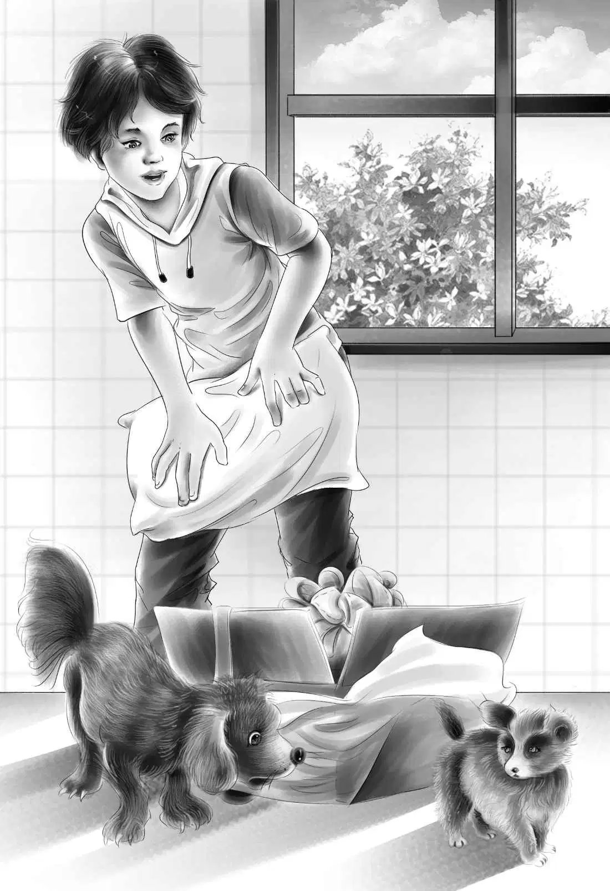

The Party
第二天，正在凝望窗外的班尼突然大喊了起来：“神秘人来了！但愿守卫能让他进来。”
来者正是约翰·卡特，这位高个子的年轻人有着一头软软的棕色头发和一双棕色的眼睛。他径直走向简姑婆，感谢她的盛情邀请，接着又开心地和孩子们聊起了天。
“卡特，我想给你看一样东西，”奥登先生说，“你们几个小家伙也过来，我们一起去看看另一间厨房里的壁炉。”
“我才不去呢，”简姑婆笑着说，“我太熟悉那根烟囱了。”
他们走到壁炉边，奥登先生问道：“卡特先生，看见石头上黄黑相间的条纹了吗？”
“怎么会这样？太有意思了！”卡特先生叫道，“壁炉居然是用铀做的，还有金子和银子呢！”
“金银含量倒并不多，”奥登先生说，“当然，我们搭烟囱的时候从没听说过有铀。我想这是世界上唯一用铀矿砌成的烟囱了。”
“整根烟囱都是这样砌成的吗？”班尼问。
爷爷笑着答道：“是的，用同样的方法砌成的，只不过屋外的一截比较粗糙，屋里的这截光滑些而已。我父母、我和简，从来没想到这根烟囱里会含有铀矿！”
他们回到了起居室。
杰西说：“简姑婆，还记不记得您以前说过，屋子里没什么秘密可言？可这根烟囱也算一个不小的秘密呐！”
“我当时哪知道这个？”姑婆感叹道。
“我们那时候连这片地都不知道呢！”班尼说，“也不知道神秘人是谁。咱们不如就把这里叫做‘神秘农场’吧？”
“是个好名字！”卡特先生说，“你可以把这名字写在路牌上，挂在路口。”
六点钟，生日派对正式开始了！兴奋之情洋溢在每个人脸上，连望望都不停地欢叫着，但谁都没有去阻止它。
大桌子上铺上了细细的亚麻桌布，八个座位上摆好了简姑婆最精致的餐具，70根小蜡烛插在生日蛋糕上。
晚饭过后，简姑婆说：“你们把盘子拿到厨房去，就搁在那儿，待会儿再洗。我要打开礼物喽！”

孩子们为简姑婆精心准备了礼物。他们坐在一旁，目不转睛地看着姑婆。
杰西不禁想道：“这就是当时那个卧床不起的小老太太吗？多大的改变啊！幸亏我们来了这里。”
“你们给我的每一件礼物我都超爱！”简姑婆兴奋不已。
“爷爷，我去拿您准备的礼物吧？”亨利大声说。
“好的，乖孩子。”奥登先生笑着同意了。
亨利飞奔向马厩，不一会儿他手里抱着一只黑白花的小奶狗回来了。亨利将小狗放到地上。小狗一副娇柔的模样儿。望望立刻站了起来，瞪着它。
“到这里来，望望，”杰西说，“乖点儿！”
“简姑婆，它的名字叫公主。”亨利说。
“噢，多可爱的小狗啊！”简姑婆说，“是给我的吗？”
“是啊，”奥登先生说，“等孩子们回家以后，就由它代替望望来陪你吧！”
望望摇一摇尾巴，坐下了。
“它还只是个小宝宝呢，望望，”杰西说，“听话，别吓着它！”
“简姑婆，您想抱一抱小狗吗？”亨利问。
他将小狗放到姑婆怀里。望望可不喜欢这样，便坐下来瞪着这只不速之客。
谁都看得出来，简姑婆很喜欢这个小不点，而小狗狗也喜欢她，它躺在她的怀里，眯上了眼睛。
“公主累了，”亨利说，“它随时都会睡着。”
简姑婆静静地坐着，轻轻把小狗抱在怀里，慈祥地看着小家伙熟睡的样子。
望望又挨着杰西趴下了，仿佛在说：“哼，我才不在乎呢，反正我是杰西的狗狗！”
爷爷看着一屋子的家人和朋友。每一个孙子孙女都是他的心头肉，而现在他跟姐姐也重归于好了。
爷爷对卡特先生说：“今天我真的很开心，看看我的这些好孩子们！”
“奥登先生，您真的很幸福。”
“明年我们会更幸福的！”他接着说，“孩子们要回学校了，山姆和安妮会住进来，麦琪和简可以友好相处，而最开心的是我重新有了姐姐！”
简姑婆摇了摇头，眼里噙着泪水说：“不，詹姆斯，最开心的是，我有个好弟弟。”
奥登家的孩子们彼此看着对方，激动得连话都说不出来了。